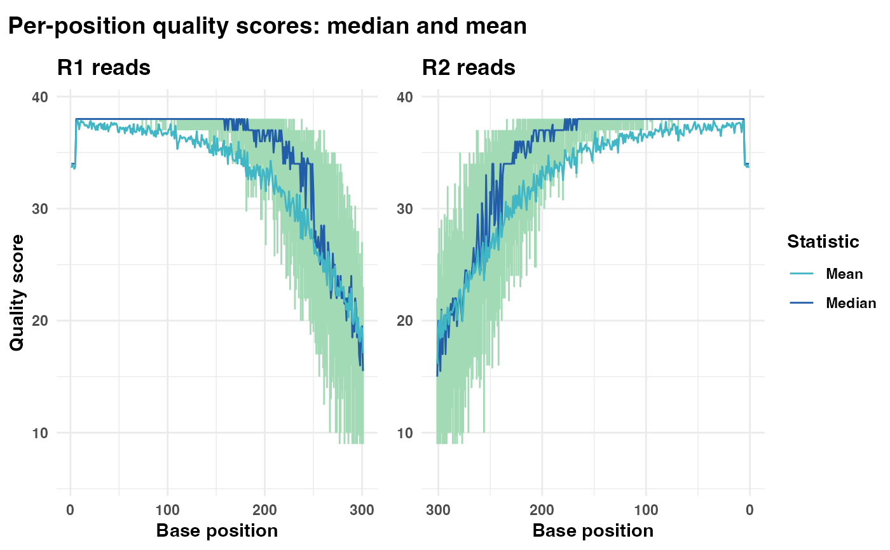
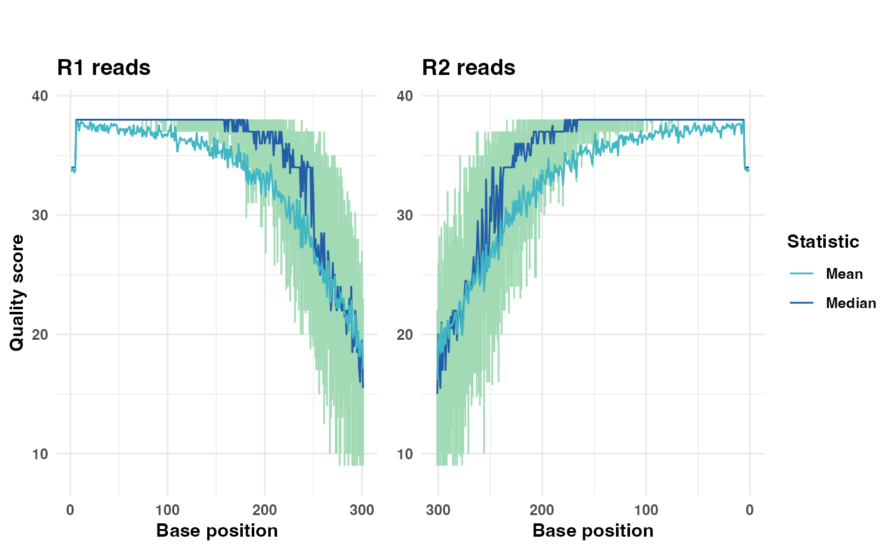
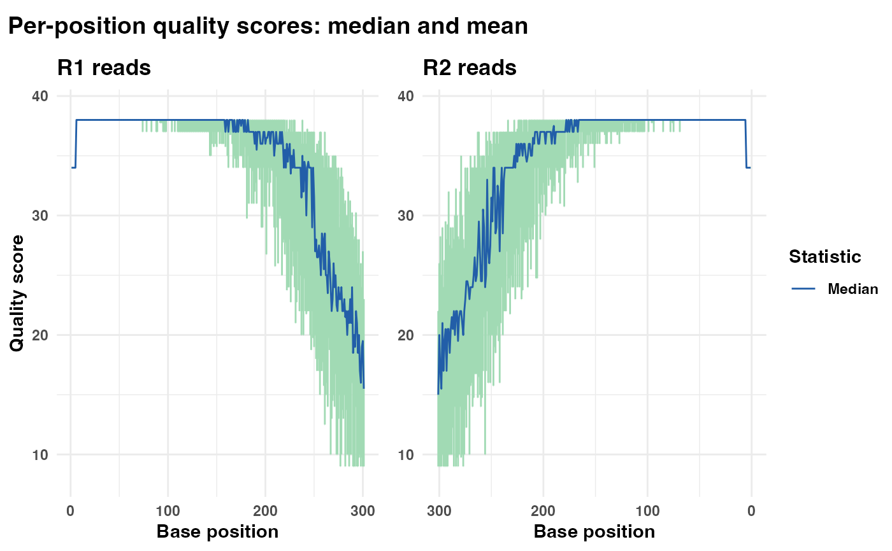
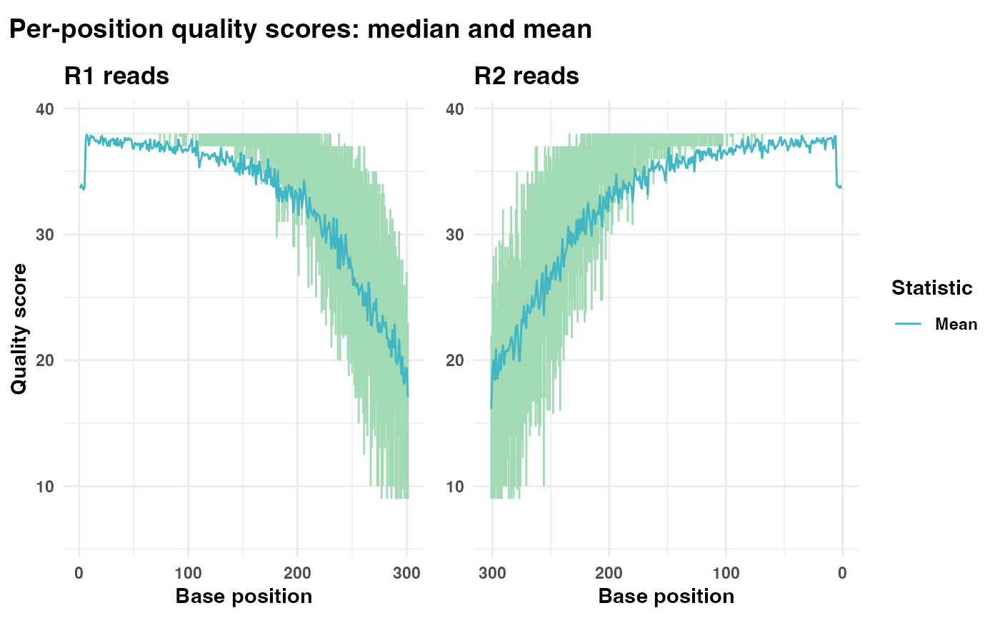

Generates a plot displaying the quality scores for each position in FASTQ reads.
Usage
plot_base_quality(
fastq_input,
reverse = NULL,
quantile_lower = 0.25,
quantile_upper = 0.75,
plot_title = "Per-position quality scores: median and mean",
show_median = TRUE,
show_mean = TRUE,
show_overlap_box = FALSE,
tmpdir = NULL
)Arguments
- fastq_input
(Required). A FASTQ file path or FASTQ object containing (forward) reads. See Details.
- reverse
(Optional). An optional FASTQ file path or FASTQ tibble containing reverse reads. Defaults to
NULL. See Details.- quantile_lower
(Optional). The lower quantile threshold for the error bars in the plot. Defaults to
0.25.- quantile_upper
(Optional). The upper quantile threshold for the error bars in the plot. Defaults to
0.75.- plot_title
(Optional). The title of the plot. Defaults to
"Per-position quality scores: median and mean". Set to""for no title.- show_median
(Optional). If
TRUE(default), a line representing the median quality scores is added to the plot.- show_mean
(Optional). If
TRUE(default), a line representing the mean quality scores is added to the plot.- show_overlap_box
(Optional). If
TRUE, a shaded box is drawn to indicate the mean overlap length that would result from merging all reads in their current state. This visualization is only applicable whenreverseis specified. Defaults toFALSE.- tmpdir
(Optional). Path to the directory where temporary files should be written when tables are used as input or output. Defaults to
NULL, which resolves to the session-specific temporary directory (tempdir()).
Details
The mean and median quality scores for each base position over all reads are plotted as curves. The vertical bars at each base indicate the interquartile range.
fastq_input and reverse can either be file paths to FASTQ files
or FASTQ objects. FASTQ objects are tibbles that contain the columns
Header, Sequence, and Quality, see
readFastq.
If reverse is provided, it is plotted together with the first plot in
its own panel. Note that the x-axis in this panel is reversed.
The vertical bars represent the interquartile range (25% - 75%) in the
quality scores. Custom quantile ranges can be specified via
quantile_lower and quantile_upper. Additionally, the median and
mean quality lines, and overlap-shading box may be turned off by
setting show_median = FALSE, show_mean = FALSE, or
show_overlap_box = FALSE, respectively.
If fastq_input (and reverse, if provided) contains more than
10 000 reads, the function will randomly select 10 000 rows for downstream
calculations. This subsampling is performed to reduce computation time and
improve performance on large datasets.
Examples
# Define inputs
fastq_input <- system.file("extdata/small_R1.fq", package = "Rsearch")
reverse <- system.file("extdata/small_R2.fq", package = "Rsearch")
# Generate and display quality plot with both median and mean lines
qual_plots <- plot_base_quality(fastq_input = fastq_input,
reverse = reverse)
print(qual_plots)

# Generate and display quality plot without the plot title
qual_plots_wo_title <- plot_base_quality(fastq_input = fastq_input,
reverse = reverse,
plot_title = "")
print(qual_plots_wo_title)

# Generate a plot showing only the median quality line
qual_plots_median_only <- plot_base_quality(fastq_input = fastq_input,
reverse = reverse,
show_mean = FALSE)
print(qual_plots_median_only)

# Generate a plot showing only the mean quality line
qual_plots_mean_only <- plot_base_quality(fastq_input = fastq_input,
reverse = reverse,
show_median = FALSE)
print(qual_plots_mean_only)
